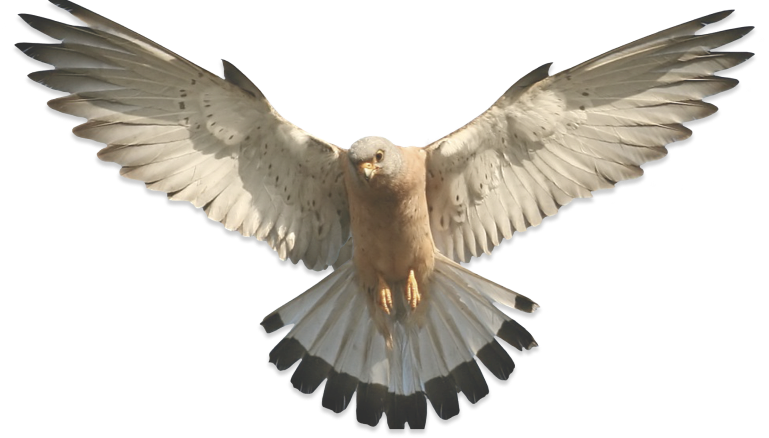

<section id="landing">
  <div id="glass"></div>
  <!--  -->

  <video width="320" height="240" nocontrols autoplay loop id="bird">
    <source src="../../../../assets/ficha-animal/background-video.mp4" type="video/mp4">
  </video>

  
  <div id="redes">
    
    
    
  </div>
  
</section>


<select [(ngModel)]='animal' #referenciaParaEsteSelect>
  <option *ngFor="let animal of especie">{{animal}}</option>
</select>

<app-escolhe-animal [referencia] = 'animal'></app-escolhe-animal>

<h1 class="mt-5 mb-5">REGISTADOS</h1>
<div *ngFor="let animal of animais">
  <app-animal-reader [animalSerLido]='animal'></app-animal-reader>
</div>
